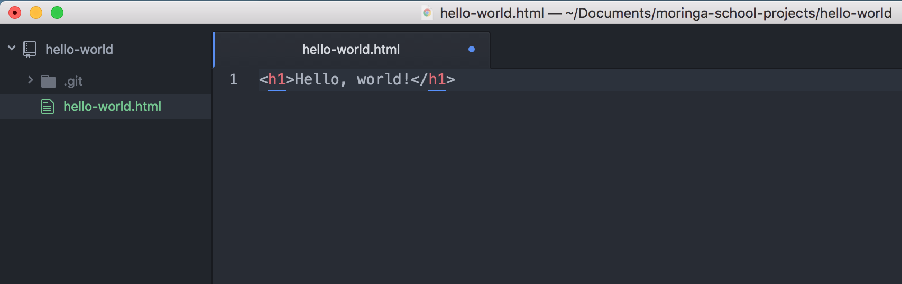
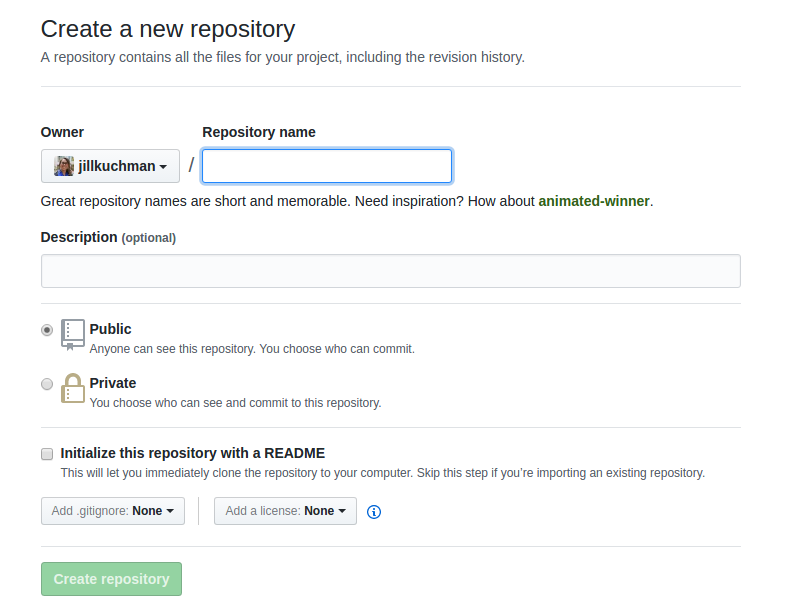
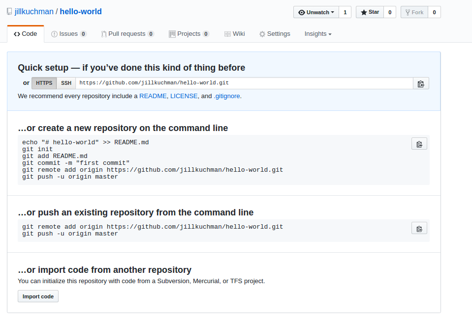
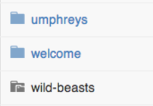

Monday: Using Atom and Git
In this lesson, we are going to walk through creating our first webpage in the Atom text editor and tracking the process using Git. Make sure you have installed both of these on your computer before we begin (see the instructions in the Pre-Course Setup (Links to an external site.) if you haven't already).
Overview of Atom
Let's take a quick tour of Atom. Open the program. When we open the editor, we arrive on an empty file with the name "untitled". If we add content to the file, we see the x at the top becomes a blue circle. This indicates that there is content that hasn't yet been saved. We'll save this file as my-first-webpage.html using the .html extension to indicate that this will be a document written in HTML. The blue circle returns to a grey x and we know that our file's content has been saved.
Atom offers developers the ability to customize the editor's settings and shortcuts. Press Cmd + , (Mac) or Ctrl + , (Ubuntu and Windows) to see the Settings view.
One setting that we want to make sure we have in place is the tab length. Writing good code means making a habit of using consistent indentation. The standard for indenting lines of code is 2 spaces. We have confirmed that this is set to 2. So, rather than hitting the space bar twice, we can use the tab key for indentation.
You won't need to worry too much about all of the customization possibilities now but as you start gaining coding experience, remember that you can return to the Settings view to make updates to keyboard shortcuts, themes, or packages that add other functionality to the editor.
Git Project Setup
We've already started using command line to navigate our computer. Let's switch gears a little and expand on what we're able to do using the command line and start using Git and GitHub. In this lesson, we will create a simple webpage and track the process using Git.
Tracking changes with Git
At Moringa School, every project that we create will have its own directory (a folder in your laptop) and its own repository (a folder on Github). Now we are going to walk through creating a new project and tracking those changes with Git.
The first thing we need to do is create the project directory on our own computers. We'll do this just like we have done previously - Git will come in shortly. Open up Terminal and navigate to the folder where you would like to create your projects.
I am going to create a new folder named moringa-school-projects inside of my computer's Documents directory to hold all of the projects that I will create in class.
$ cd Documents
$ mkdir moringa-school-projects
$ cd moringa-school-projects
Now we are located in our moringa-school-projects directory, and we can add a new directory for this project. I am going to call this one hello-world (and just a bit of computer programming history for you: it's traditional to write some form of hello world as the first program or example you write in a new language).
$ mkdir hello-world
$ cd hello-world
Now we are located inside of our new hello-world directory, and we can turn it into a Git repository. We do this by initializing Git inside of the directory (make sure that you do this inside of the hello-world directory! Remember, you can always see your location with $ pwd):
$ git init
Initialized empty Git repository in /Documents/moringa-school-projects/hello-world/.git/As the confirmation message reads, the Git repository has been initialized inside of a directory named .git. But when we try to list the contents of hello-world) with $ ls, where is it?
Directories that being with . are hidden directories, which means that they do not show up with the $ ls command. To view hidden files, we need to use the -a option like this, which stands for "all":
$ ls -a
.git
There's our .git directory! Let's cd into it and see what's inside:
$ cd .git
$ ls
HEAD description info refs
config hooks objectsNow, we're never actually going to be touching any of these files. The .git directory is where all of the changes we make to our project will be tracked. Whenever we add, edit, or delete files, Git will be keeping track of those changes in here. This is actually why the .git directory is hidden in the first place - to prevent us from making any changes that could interfere with Git's job.
Let's navigate back up to our main project directory:
$ cd ..
Now that we've set up our Git repository, we need to tell Git who is working on the project. If you are working solo, you can skip this step - you've already set the global user name and email for all projects on your computer.
Now our project is set up with a Git repository initialized. Let's start adding files to track!
Create an empty file in the project directory named hello-world.html:
$ touch hello-world.htmlNow open the project in Atom using the following command:
$ atom .The $ atom command tells the computer to open anything that follows it in Atom. The . means current directory, so the entire directory should open up in Atom.
Let's add some text to hello-world.html:
hello-world.html
<h1>Hello, world!</h1>Here's what this looks like in Atom:

The little blue dot on the right of the page tab next to the file name (hello-world.html) means that the file has unsaved changes. Save the file with File > Save in the Atom menu bar.
We can see what Git is doing with our files with $ git status:
$ git status
On branch master
Initial commit
Untracked files:
(use "git add <file>..." to include in what will be committed)
hello-world.html
nothing added to commit but untracked files present (use "git add" to track)
This is Git telling us, "I noticed that you added a file named hello-world.html, but unless you use git add, I am not going to do anything with it."
Before we use $ git add, let's quickly go over a concept that can be a little confusing when first learning git: the staging environment and how it relates to a commit.
To reiterate, a commit is a record of what files you have changed since the last time you made a commit. A commit is like a save point, and we want to make a commit when we've made a notable change or addition to a project. Commits narrate the development of a project and allow you to go back to the state of a project at any point.
So, how do you tell Git which files to put into a commit? This is where the staging environment comes in. As we just saw, when you make changes to a repo, Git notices that a file has changed but won't do anything with it.
To add a file to a commit, we first need to add it to the staging environment. To do this, we can use the $ git add <filename> command. Here is how we add hello-world.html:
$ git add hello-world.html
Now when we run $ git status, we see that Git is tracking hello-world.html:
$ git status
On branch master
Initial commit
Changes to be committed:
(use "git rm --cached <file>..." to unstage)
new file: hello-world.html
Once you've used the git add command to add all the files you want to the staging environment, you can then tell Git to package them into a commit using the git commit command. Let's do that now.
$ git commit -m "Add initial hello world page" To make a commit, we use the git commit command followed by the -m option (for "message"), followed by a short message describing the commit.
For consistency, commit messages should be in present tense and describe the change(s) made. As a rule of thumb, they should complete the phrase, "This commit will...". So when we look back at our commit history, we know that this commit will "add initial hello world page".
We can look at our Git commit history with the git log command:
$ git log commit de955b7ef50670e42d21f2366ea09cf517379475 Author: Albert Einstein <einstein@email.com> Date: Tue May 23 16:50:58 2017 +0300 Add initial hello world page
This command lists the commits made in a repository in reverse chronological order, so the most recent commits show up first. As we can see, this commit has been assigned a unique collection of numbers and letters, de955b7ef50670e42d21f2366ea09cf517379475. From now on, whenever we would like to return to this project exactly as it is right now, we will be able to return to this commit.
All right, let's add a short paragraph to our page to introduce ourselves:
hello-world.html
<h1>Hello, world!</h1>
<p>Welcome to my first website! I am about to embark on the exciting journey of learning how to code. Won't you join me?</p>
Let's check out our git status and see what it tells us:
$ git status
On branch master
Changes not staged for commit:
(use "git add <file>..." to update what will be committed)
(use "git checkout -- <file>..." to discard changes in working directory)
modified: hello-world.html
no changes added to commit (use "git add" and/or "git commit -a")
Git knows that hello-world.html has been modified, but the changes still need to be added to the staging environment and then committed. Let's do that now, using another option for git add:
$ git add .
$ git commit -m "Add intro paragraph"
[master 6ad09ba] Add intro paragraph
1 file changed, 1 insertion(+)
This time, we used $ git add . instead of $ git add hello-world.html. The . stands for the current directory (just like in the case of the command $ atom .), and $ git add . will add any changes in the directory that have not yet been added to the staging environment, so we can add multiple files at the same time.
Let's look at our project history now:
$ git log
commit 6ad09ba06206efdf5be66c56b0e425ed56ac70d1
Author: Albert Einstein <einstein@email.com>
Date: Tue May 23 17:26:22 2017 +0300 Add intro paragraph commit de955b7ef50670e42d21f2366ea09cf517379475 Author: Grace Hopper and James Bond <grace+james@> Date: Tue May 23 16:50:58 2017 +0300 Add initial hello world pageNotice that the most recent commit is at the top. We can make this a little easier to read by adding the --oneline option like this:
$ git log --oneline
6ad09ba Add intro paragraph
de955b7 Add initial hello world page
The seven-character string before each message is also a unique identifier for the commit and can be used in the same way (we will see how in an upcoming lesson).
This may seem like a lot of work for such minor changes on a single web page, but as we start building more projects - and more complex projects - we will see just how useful it is to track changes to our code this way.
Remote repositories on GitHub
So far, our code only exists on the machines where they were written. We have been tracking our changes in a local Git repository, which is the .git directory we've seen. However, it would be good to have a copy of our work backed up online, especially when our projects grow in size and have real-world implications. More importantly, we will need some way of collaborating with others on our work. When we want to push our work to the world, we will push it to a remote repository on GitHub. In this lesson, we will explore GitHub and how to use it.
What do we mean when we say local and remote? When we work on a repository that we can only access from the computer on which it is saved, we call this a local repository. All the code we have written so far has been written locally. If we want to work on the project from another device, we won't be able to access it. A remote repository, on the other hand, is a repository that is saved in a location outside of the computer where it was created, but still accessible by that computer (and other computers as well). At Moringa School, we will generally be saving our work to remote repositories.
Let's start by pushing our local repository to a remote repository on GitHub.
The first thing we need to do is create the remote repository on GitHub. Each partner needs to create a repository on their own GitHub account. Both remote repositories will link to the same local repository, but this will give each of you a personal record of the project.
Once you're logged in, click the New Repository button, which will take you to the Create New Repository page (Links to an external site.).

Let's go over the options on this page.
The text box under Repository Name is where we enter the name of the repository. You can name it anything you'd like, but give it a name that helps you identify the repository. It makes sense to give it the same name as the project folder for your local repository. For this project, let's use "hello-world".
Underneath the repository name, you can enter a description. The description is optional, but it can be helpful for others and your future self to have a quick reference for the description of the repository content.
You have the option to make a repository public or private. Because we're using free GitHub accounts, we can only select the Public option. As the page notes, anyone can see a public repository, but you can choose who has permission to contribute to it.
The last option asks whether you would like to initialize the project with a README. A README file contains information about the contents of the repository - stuff like the authors, description, setup instructions, and licensing information. Do not select this box. We will explore README files in an upcoming lesson.
With the repository name and description set, click the Create Repository button. You will be taken to a page that looks like this:

With this empty repository in place, we can push our locally-stored code to the new remote location.
First, we need to tell our local repository that a remote repository even exists somewhere online. We do this by adding it to Git's record. Just like Git wouldn't do anything with our files until we used git add, it won't acknowledge our remote repository yet, either.
To tell the repository about the remote location, we use the git remote add command like this:
$ git remote add origin https://github.com/moringaschool/hello-world.git
The git remote add command takes two arguments:
- The remote name, for example origin
- The remote name can be anything - it's a nickname for the remote repository at the URL provided. By convention, the default name for the remote repository is named "origin", so we gave it that name here. However, you can give the remote any name you want, as well as work with multiple remotes.
- The remote location or URL, for example
https://github.com/moringaschool/hello-world.git- This is the URL found in the Quick setup box at the top of the empty repository page
Please note that your command should include your repository info. Our URL is https://github.com/moringaschool/hello-world.git in this example, but you want to replace this with your own URL.
Now Git knows that there is a remote repository, and it's where you want your local repository changes to go. To confirm that Git has done this successfully, run this command:
$ git remote -v
The response looks something like this:
origin https://github.com/moringaschool/hello-world.git (fetch)
origin https://github.com/moringaschool/hello-world.git (push)
The -v option will give you a list of all of the remote repositories that your local repository knows about. There's one repository and it’s listed twice, which means it is available to push information to and to fetch information from. If both you and your partner have added remote repositories, then both repositories should be listed.
We are finally ready to push our code from local to remote. In other words, we will be copying it from our machine to the location on GitHub. To do this, we will use the git push command:
$ git push origin master
The git push command takes two arguments.
- First, we provide the name of the remote repository location. In this example, we wanted to push to the remote repository we just created, so we can use the nickname origin that we created.
- Second, we provide the name of the version of the code (also known as a branch, which we will learn more about in an upcoming lesson) we are pushing. As we start building more complex projects, we will have multiple versions of code at various stages of development on a single, local device. At the moment, we only have one branch, the "master" branch.
masteris the name given to this branch by Git, and the master is always considered the master copy.
When you push to GitHub on a computer where the user has not been set globally, the terminal will prompt you to enter your GitHub login information. This is GitHub protecting your account - only the owner of a repository is allowed to push to it. Once you have entered your login information, the terminal will give you some feedback that it is pushing your code to the remote repository. Go ahead and refresh the repository's page on GitHub, and you can see the file structure of the project, and the same commits that we saw in the terminal.
Cloning from GitHub
All right, we've pushed code from our personal machine up to GitHub. But as we mentioned before, one of the big advantages to using a service like GitHub is how it lets us collaborate with others on the same code. This requires copying the code from the remote repository into a local repository, a process called cloning.
To practice this, first, we need to remove the local repository from our personal computers. If you are in the hello-world directory (check with pwd):
$ pwd
Documents/moringa-school-projects/hello-world
Move up one directory with $ cd .. and remove the folder:
$ cd ..
$ rm -rf hello-world
Now the folder is gone, and we can clone our remote repository back onto our computers. On the main GitHub page for the repository, find the button that says Clone or download. A dialog box opens containing the URL for the repository. This is the same URL as the one we used for the remote. Copy the URL (either select the text and copy it manually, or click on the clipboard button next to the URL), and we will clone the repository using the git clone command in the terminal:
$ git clone https://github.com/moringaschool/hello-world.git
The terminal will print some feedback that it has successfully cloned the repository. Go ahead and list the contents of the folder and see that we now have a hello-world directory:
$ ls
hello-world
If we navigate into hello-world and run git log, we can see that our previous commits are still part of this repository.
Take a look at the Git remotes for the repository:
$ git remote -v
origin https://github.com/moringaschool/hello-world.git (fetch)
origin https://github.com/moringaschool/hello-world.git (push)
We see that the remote repository is automatically linked, and by default, it has the name origin. If we make changes to our local repository and want to push those to GitHub, we will use the origin remote nickname, like this:
$ git push origin master
One more (important) thing about Git repositories. Make sure that you never create or clone a repository inside of an existing repository. This creates something called a submodule, which has an icon like the one here for wild-beasts on GitHub:

There are cases when you would want to do this, but for our purposes, it will only interfere with our Git process.
All right! We've just covered a lot of ground here! Don't worry about memorizing everything that we did here, and use the cheat sheet for reference when using Git in your daily workflow. It's okay if everything isn't making perfect sense right now - we will be using Git every day while at Moringa School, and like anything else, it will become more natural with practice.